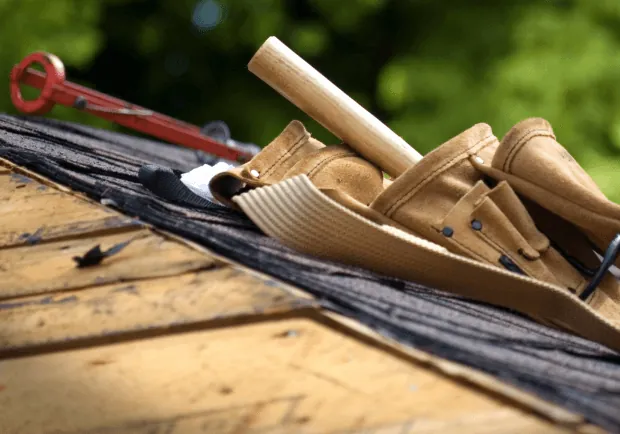

When maintaining your home, the roof is one of the most critical components. It’s your first defense against the elements, and keeping it in good shape is crucial. Whether you’re a homeowner looking to tackle some DIY shingle repair or a curious reader seeking to understand the process, this guide will walk you through everything you need to know about shingle repair.
Understanding Shingle Damage
What Causes Shingle Damage?
Shingle damage can result from various factors, including weather conditions, age, and improper installation. Let’s explore some common causes:
- Weather: Heavy rain, snow, hail, and strong winds can all contribute to shingle damage. Over time, the elements take a toll on your roof, leading to the need for repairs.
- Age: Like any other material, shingles have a lifespan. As they age, they become brittle and more susceptible to damage.
- Improper Installation: If shingles are not installed correctly, they can become loose or misaligned, leading to potential leaks and other issues.
Signs Your Shingles Need Repair
It’s essential to keep an eye on your roof and identify when repairs are necessary. Here are some signs that your shingles might need attention:
- Missing Shingles: If you notice gaps on your roof where shingles are missing, it’s time to take action.
- Curling or Buckling: Shingles that are curling or buckling can indicate age or moisture issues.
- Granule Loss: If you find granules in your gutters or downspouts, it could mean your shingles are deteriorating.
- Leaks: Water stains on your ceiling or walls are a clear sign of roof leaks, possibly due to damaged shingles.
Steps to Repair Shingles

Gathering the Necessary Tools and Materials
Before you begin your shingle repair project, ensure you have the right tools and materials. Here’s a list of what you’ll need:
- Replacement shingles
- Roofing nails
- Hammer or nail gun
- Pry bar
- Utility knife
- Roofing adhesive or sealant
- Ladder
- Safety gear (gloves, goggles, and non-slip shoes)
Step-by-Step Shingle Repair Guide
- Assess the Damage: Start by inspecting the area of the roof that needs repair. Identify the shingles that need replacement.
- Remove the Damaged Shingles: Carefully lift the damaged shingles using a pry bar. Be gentle to avoid causing further damage to surrounding shingles.
- Prepare the Area: Once the damaged shingles are removed, clean the area and remove any debris. Make sure the surface is smooth and ready for new shingles.
- Install the Replacement Shingles: Slide the new shingles into place, ensuring they align with the existing shingles. Secure them with roofing nails, placing nails under the overlapping shingles above.
- Seal the Shingles: Apply roofing adhesive or sealant to the edges of the new shingles to ensure they are securely in place and prevent water infiltration.
- Inspect Your Work: After the repair, inspect the area to ensure everything is secure and consistent with the rest of the roof.
When to Call a Roofing Contractor
While some shingle repairs can be handled by handy homeowners, there are situations where professional help is necessary. Consider calling a roofing contractor if:
- The Damage is Extensive: If multiple shingles are damaged or if there are underlying structural issues, a professional should assess the situation.
- You’re Uncomfortable with Heights: Safety is paramount, and if you’re not comfortable working on a ladder or roof, it’s best to leave it to the experts.
- You Lack the Necessary Tools: Professional roofing companies have the tools and expertise to handle repairs efficiently.
The Importance of Regular Roof Inspections
To prevent extensive damage and costly repairs, regular roof inspections are crucial. Here are some benefits:
- Early Detection: Regular inspections can identify potential problems before they become major issues.
- Prolong Roof Lifespan: Timely repairs and maintenance can extend the life of your roof.
- Peace of Mind: Knowing your roof is in good condition provides peace of mind for you and your family.
How to Conduct a Roof Inspection
You can perform a basic roof inspection yourself by following these steps:
- Visual Inspection: Walk around your property and look for visible signs of damage, such as missing or damaged shingles.
- Check for Leaks: Inspect your attic for any signs of water stains or leaks.
- Clear Debris: Remove any debris, such as leaves or branches, from your roof and gutters.
- Examine Flashing: Inspect the flashing around chimneys, vents, and skylights for any signs of wear or damage.
Choosing the Right Roofing Company
If you decide to hire a roofing company for your shingle repair or roof replacement, choosing the right one is essential. Here are some tips:
- Research and Reviews: Look for companies with positive reviews and testimonials from previous customers.
- Experience and Expertise: Ensure the company has experience in residential roofing and shingle repair.
- Licensing and Insurance: Verify that the roofing contractor is licensed and insured to protect yourself from liabilities.
Conclusion
Shingle repair is an essential part of maintaining a safe and functional roof. Whether you tackle the repairs yourself or hire a professional roofing company, understanding the process is crucial. Regular inspections and timely repairs can save you money in the long run and ensure your home remains protected from the elements. Remember, when in doubt, it’s always wise to consult with a professional roofing contractor for expert advice and assistance.
For expert shingle repair to your residential or commercial roof, contact EZ Roofing today!